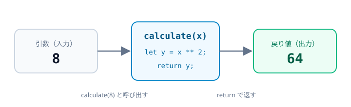
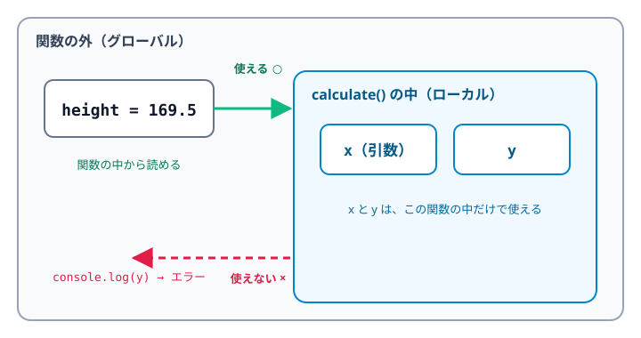
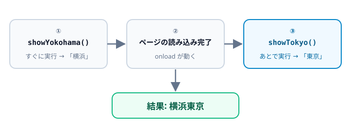

Lesson 04-1
関数の基本
用意されている関数と、自分で作る関数の書き方を確認します。
ビルトイン関数
JavaScript にあらかじめ用意されている関数です。関数名( ) の ( ) の中に値（引数）を渡すと、 結果（戻り値）が返ってきます。
| 関数 | 入力 | 結果 |
|---|---|---|
| parseInt() | ||
| isNaN() | コーヒー | |
| isNaN() | 0005 | |
| isNaN() | 5 | |
| Math.round() | 169.5 | |
| Math.ceil() | 169.5 | |
| Math.floor() | 169.5 | |
| Math.max() | 1, 5, 10, 3 | |
| Math.min() | 1, 5, 10, 3 | |
| setInterval() | 1000ms（1秒） |
let number = parseInt("0005"); // 5（文字列 → 数値）
let rounded = Math.round(169.5); // 170（四捨五入）
let maxValue = Math.max(1, 5, 10, 3); // 10（引数はいくつでも渡せる）| 関数 | 役割 |
|---|---|
| parseInt() | 文字列を整数に変換 |
| isNaN() | 数値でないとき true |
| Math.round() | 四捨五入 |
| Math.ceil() | 切り上げ |
| Math.floor() | 切り捨て |
| Math.max() / Math.min() | 最大値 / 最小値 |
| setInterval() | 指定した時間（ミリ秒）ごとに、関数を繰り返し実行 |
isNaN("0005") が false
なのは、"0005" が数値に変換できる文字列だからです。isNaN("コーヒー") は変換できないので
true になります。
ユーザ定義関数
自分で作る関数です。function
で定義しておけば、名前を書くだけで何度でも呼び出せます。
| 関数 | 入力 | 結果 |
|---|---|---|
| calculate() | 8 | |
| calculate() | 71 |
// 定義: 受け取った数を2乗して返す
function calculate(x) {
let y = x ** 2;
return y;
}
// 呼び出し
calculate(8); // 64
calculate(71); // 5041
| 用語 | 意味 | この例 |
|---|---|---|
| 定義 | 関数を作ること | function calculate(x) { } |
| 引数 | 関数に渡す値 | x |
| 戻り値 | 関数が返す結果 | return y |
| 呼び出し | 関数を実行すること | calculate(8) |
関数の外の変数と、中の変数
変数はどこで宣言したかで、使える範囲が変わります。
// 関数の外で宣言: どこからでも使える
let height = 169.5;
function calculate(x) {
// x（引数）と y は、この関数の中だけで使える
let y = x ** 2;
return y;
}
console.log(height); // 169.5
console.log(y); // エラー: y is not defined（関数の外からは見えない）
| 種類 | 宣言する場所 | 使える範囲 | この例 |
|---|---|---|---|
| グローバル変数 | 関数の外 | プログラム全体 | height |
| ローカル変数 | 関数の中 | その関数の中だけ | x、y |
ブラウザの開発者ツール（F12）の Console で、console.log(y)
がエラーになることを確かめてみましょう。
関数の外の変数は、関数の中から書き換えることもできます。 レジの合計金額のように、関数を呼ぶたびに値が積み重なる（状態を持つ）処理は、この書き方です。
let total = 0; // 合計金額（関数の外）
function addItem(price) {
total += price; // 外の変数を書き換える（return はしない）
}
addItem(500); // total は 500
addItem(700); // total は 1200total
0
total
500
total
1200
calculate() のように、引数を受け取って戻り値で返すだけの関数は、同じ引数なら必ず同じ結果になるので、動きが分かりやすくなります。
外の変数を書き換える関数は、いつ値が変わるのか追いにくくなるため、必要なときだけ使いましょう。
無名関数とアロー関数
関数は名前を付けずに作って、変数に入れることもできます。
=>
を使った短い書き方をアロー関数と呼びます。どちらも呼び出し方は同じです。
| 関数 | 入力 | 結果 |
|---|---|---|
| hello1() | 東京 太郎 | |
| hello2() | 東京 太郎 |
// 無名関数: function に名前を付けず、変数に入れる
const hello1 = function (name) {
let message = name + "さん、いらっしゃい";
return message;
};
// アロー関数: function の代わりに =>
const hello2 = (name) => {
let message = name + "さん、いらっしゃい";
return message;
};| 書き方 | 形 |
|---|---|
| 関数宣言 | function hello(name) { } |
| 無名関数 | const hello = function (name) { }; |
| アロー関数 | const hello = (name) => { }; |
関数を実行するタイミング
関数は、呼び出したときに実行されます。
window.onload
に入れた関数は、ページの読み込みが終わってから実行されます。
| 関数 | 実行のタイミング | 結果 |
|---|---|---|
| showTokyo() | window.onload で実行 | |
| showYokohama() | 通常で実行 |
function showTokyo() {
document.getElementById("message").textContent += "東京";
}
function showYokohama() {
document.getElementById("message").textContent += "横浜";
}
// ページの読み込み後に実行（( ) は付けない）
window.onload = showTokyo;
// すぐに実行
showYokohama();
window.onload = showTokyo; のように ( ) を付けないのは、
関数を「今すぐ実行」するのではなく、「あとで実行する関数」として渡すためです。
( ) を付けて showTokyo() と書くと、その場で実行されてしまいます。
確認ポイント
ファイルを修正したら保存して、ブラウザを再読み込みしましょう。反映されないときはスーパーリロード！
-
1
parseInt("0005")が 5、isNaN()が順に true / false / false になっている -
2
169.5 の四捨五入が 170、切り上げが 170、切り捨てが 169、最大値が 10、最小値が 1 になっている
-
3
setInterval() の秒数が、1秒ごとに増えていく
-
4
calculate() の結果が 64 と 5041 になっている
-
5
hello1() と hello2() の結果が、どちらも 東京 太郎さん、いらっしゃい になっている
-
6
「東京」と「横浜」が、横浜東京 の順に表示されている
-
7
Console で
console.log(y)が エラーになる（関数の中の変数は外から見えない）